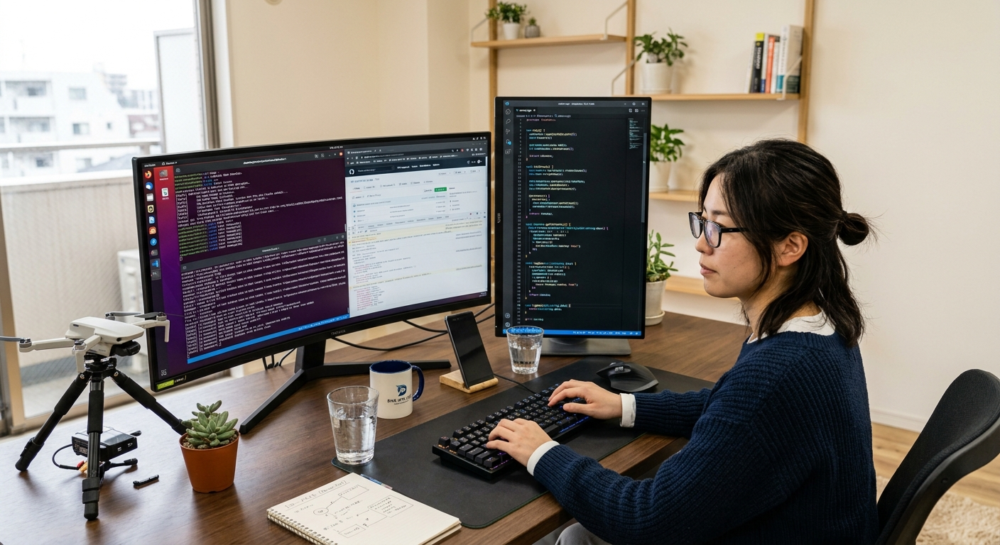
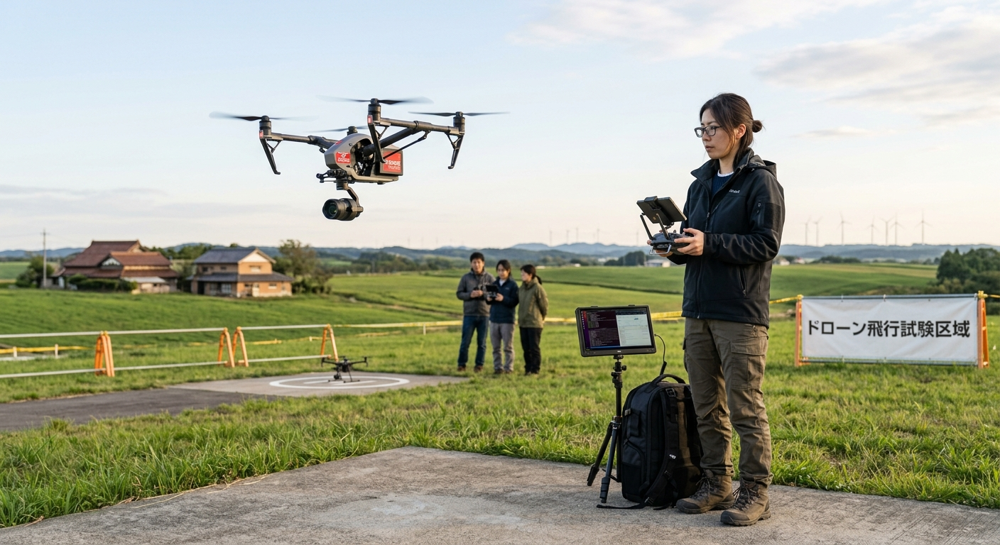
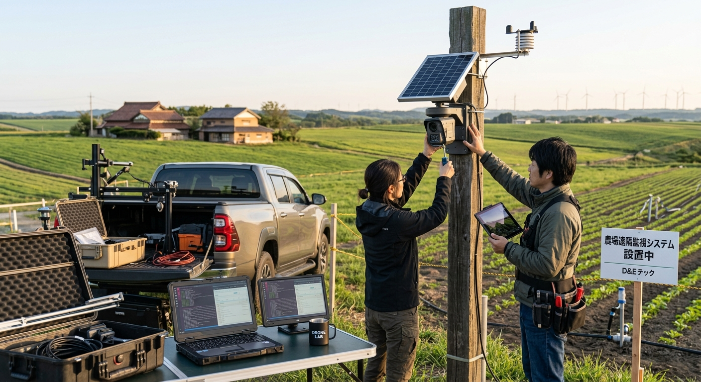
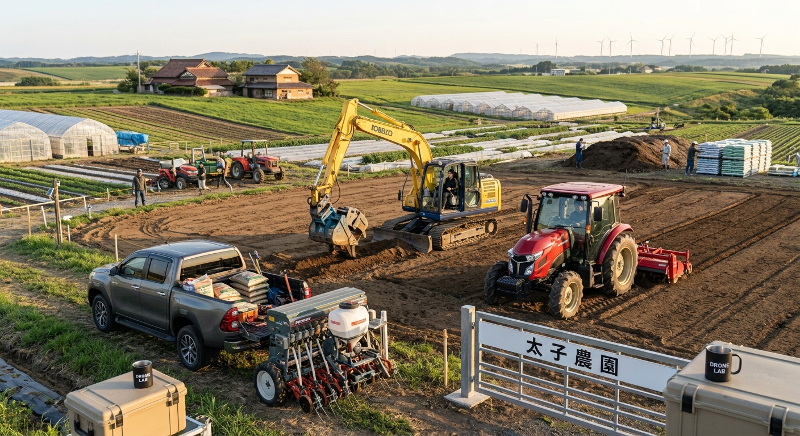

ソフトウェア開発力と現場の実証フィールドを併せ持つ「R HILL FARM」。
先端エンジニアリングが日本の農業現場にリアルな革新をもたらします。

自社オフィスで構築したAIアルゴリズムや解析システムは、現場で使われてこそ真の価値を発揮します。私たちは画面の向こう側のシステム開発にとどまらず、自社技術をそのまま実証農地へ投入。
アグリテックの現場ニーズを直接コードへフィードバックすることで、真に機能するアグリITソリューションをハイスピードで創出します。
システム開発から現場実装・機材運用までを一貫して提供する独自のアプローチ
気象データ、画像解析、生育データを統合管理するダッシュボードや、自律制御アルゴリズムの開発をおこないます。

自律飛行ドローンを用いた圃場センシング。高精度カメラ・各種センサーにより広大な作物の生育診断を自動化します。

ソーラー駆動のカメラシステムや各種環境センサーを圃場に設置。リモート環境から現場状況を常時データ化・監視します。

大型重機やスマート農機を駆使した土壌基盤整備。自社農園「太子農園」において最先端の農業テクノロジーを実地検証しています。